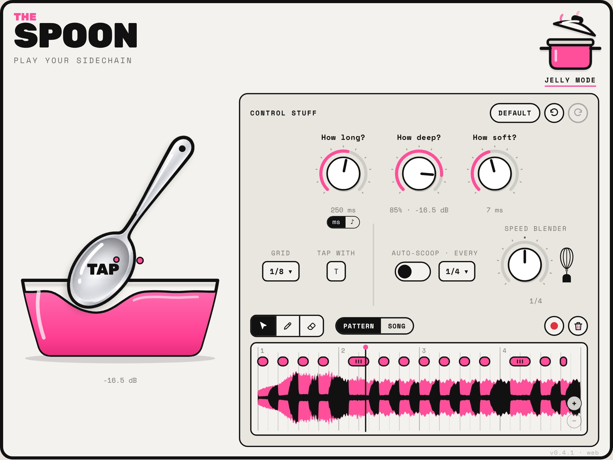
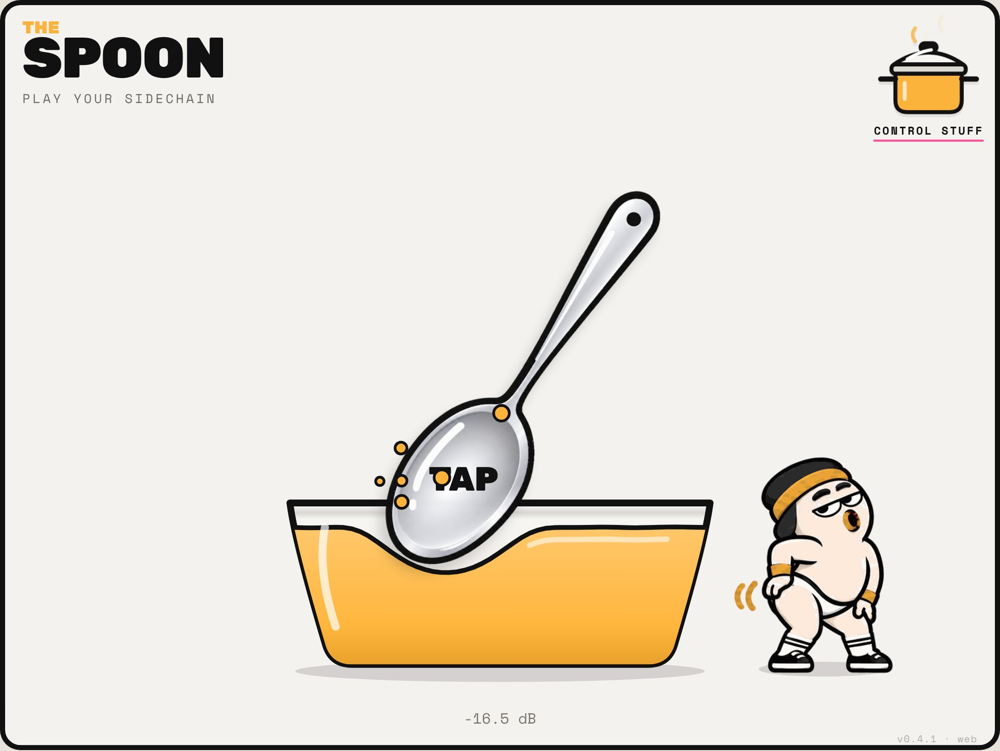

Audio plugin · in beta
THESPOON
Play your sidechain
A sidechain you play. Tap the spoon, a key or a MIDI note and your sound dips. Short tap, short dip. Hold it, it stays down. No routing, no ratio, no threshold.

Try it right here
This is the real plugin screen running the same sound engine as the plugin. Press play, then tap the spoon or press T. A MIDI keyboard works too, in Chrome.
Headphones help. The demo pad is an original track; you can also load your own loop.
Simple surface, serious engine
The plugin talks like a musician, not like an engineer. Three questions shape every dip.
- How long? How deep? How soft?
How fast the sound comes back (in ms or in note values), how far it drops, and how gently it dips in.
- Pattern and Song
Record a 4-bar pattern that loops, or tap along a whole song. Taps lock to your DAW's grid and stay editable.
- Auto-scoop and Speed blender
A steady pump on the beat, with a spring-loaded knob that speeds it up into a riser and snaps back.
- Jelly mode
Close the lid and it's just the spoon, the jelly and a small dancer who changes moves with every dip.
For mixers too
Make room exactly where you need it. Just play your sidechain and spoon it.
Duck the guitars only in the loudest chorus, clear a gap for one snare hit, breathe a pad around the vocal. No setting up a compressor and a key input for a moment that lasts a bar.

Formats
- Mac
- VST3 · Audio Unit
- Pro Tools
- AAX in progress
- Runs on
- Apple Silicon and Intel
About MANYUKO
MANYUKO is a small plugin studio started by Jonathan Weinreich (JUNO VINE), a producer, songwriter and artist based in Tel Aviv.
THE SPOON came out of the studio. Sidechain is one of the most useful moves in a production or a mix, and one of the most fiddly to set up. So we made one you simply play.
At the end of the day, sidechain is a technical tool. But everybody knows it's a creative one.
More kitchen tools are cooking.